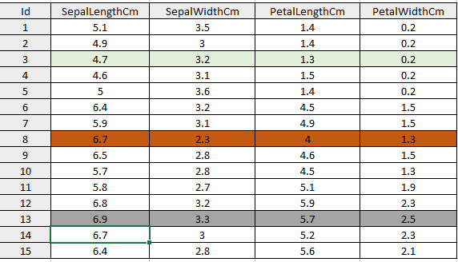
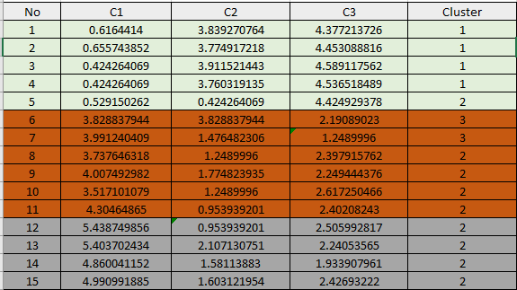
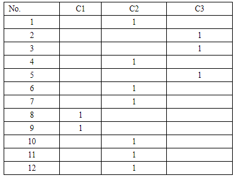
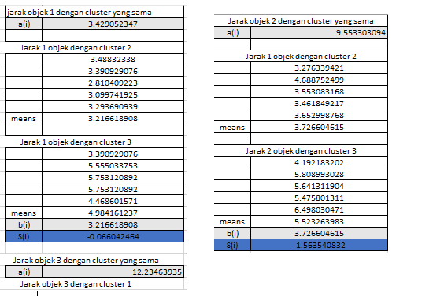
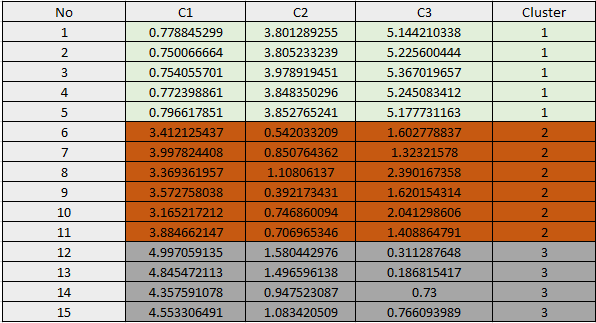
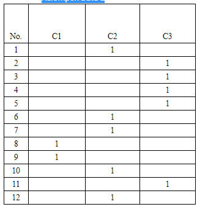
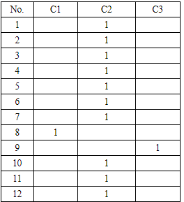

K-Means data iris
TUTORIAL K-MEAN MENGGUNAKAN EXCEL
Metode K-Means Clustering digunakan dalam data mining untuk mengelompokan data-data kedalam cluster atau beberapa kelompok berdasarkan suatu kemiripan variabel atau atribut data.
Tahapan – tahapan perhitungannya adalah:
\1. Menentukan Jumlah cluster data
\2. Tentukan titik pusat cluster
\3. menghitung jarak obyek dengan centroid
\4. kelompokan objek
\5. jika kelompok data hasil perhitungan baru sama dengan hasil perhitungan kelompok data baru maka selesailah perhitungannya.
Dalam tahap ini akan dijelaskan langkah-langkah pengoperasian algoritma K-Means secara manual:
Diketahui : Jumlah Cluster = 3,
jumlah data =15
jumlah atribut = 4

1. Penentuan pusat awal cluster
Di ambil data ke 13 sebagai pusat cluster ke-1 6.9 3.3 5.7
Di ambil data ke 8 sebagai pusat cluster ke-2 6.7 2.3 4
Di ambil data ke 3 sebagai pusat cluster ke-3 4.7 3.2 1.3
\2. Perhitungan Jarak Pusat Cluster
Untuk mengukur jarak antara dengan pusat Cluster digunakan Euclidian Distance, kemudian akan didapatkan matriks jarak yaitu C1, C2 dan C3 sebagai berikut:
Rumus
Euclidian Distance:


3. Pengelompokan Data
Jarak hasil perhitungan akan dilakukan perbandingan dan dipilih jarak terdekat antara data dengan pusat cluster, jarak ini menunjukkan bahwa data tersebut berada dalam satu kelompok dengan pusat cluster terdekat.
Berikut ini akan ditampilkan data matriks pengelompokkan group, nilai 1 berarti data tersebut berada dalam group(kelompok data).
(Kelompok Data 1)

4. Penentuan pusat cluster baru
Setelah diketahui anggota tiap-tiap cluster kemudian pusat*cluster* baru dihitung berdasarkan data anggota tiap-tiap cluster*sesuai dengan rumus pusat anggota *cluster. Sehingga didapatkan perhitungan sebagai berikut :

Iterasi ke-2
5. Ulangi langkah ke 2 (kedua) hingga posisi data tidak mengalami perubahan.
Di ambil data ke 13 sebagai pusat cluster ke-1 4.54 3.62 1.54 0.2
Di ambil data ke 8 sebagai pusat cluster ke-2 6.2 2.74 5.08 1.5
Di ambil data ke 3 sebagai pusat cluster ke-3 6.72 3.6 5.804 2.564

Langkah selanjutnya sama dengan langkah pada nomor 3 jarak hasil perhitungan akan dilakukan perbandingan dan dipilih jarak terdekat antara data dengan pusat cluster, jarak ini menunjukkan bahwa data tersebut berada dalam satu kelompok dengan pusat cluster terdekat.
Kelompok Data 2

Pada perhitungan ini Iterasi Berhenti pada iterasi ke-4 karena kelompok data 4 = kelompok data 3 dan hasil Clustering,* telah mencapai stabil dan konvergen. Untuk perhitungan yang lebih rinci di lampirkan pada file Excel. Kelompok data 3
